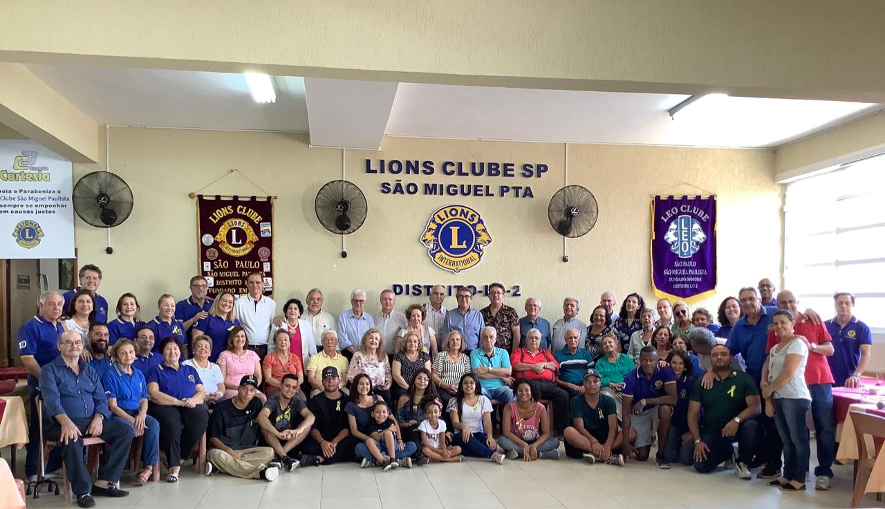

Campanhas
- KIT de higiene
- Foram distribuídos gratuitamente KITS de prevenção ao Covid-19 que continham: folheto informativo, álcool em gel, sabonete e máscara.
- Natal 2019
- Campanha realizada em conjunto com o Lions clube São Paulo São Miguel Paulista. Foi realizada uma ceia de Natal e a distribuição de presentes para crianças carentes.
- Asilo
- Campanha realizada em parceria com o LEO clube Penha em um asilo local, foram doados produtos de limpeza e distribuído alimentos.
- Churrasco dos governadores
- Além disso, o nosso LEO clube participa de eventos do Lions. 